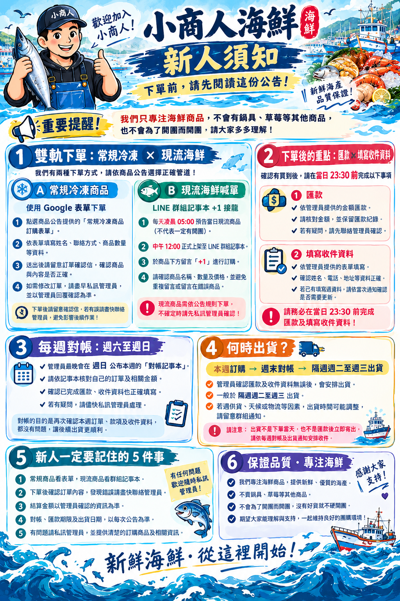
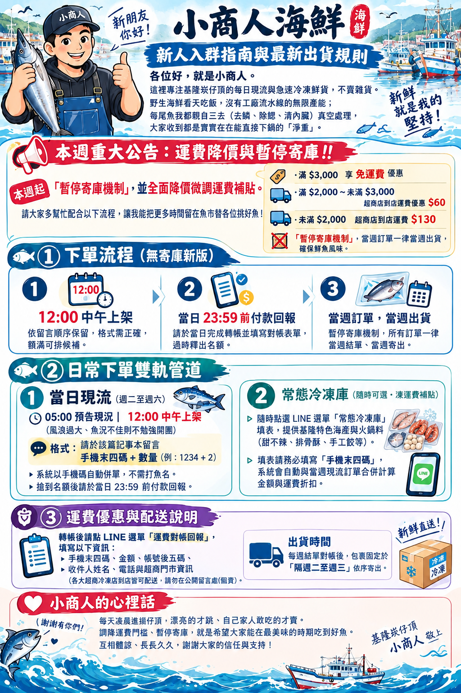

📂 作品目錄 (全版本小圖卡專區)
為每個迭代版本量身打造之詳細小圖卡，包含 100 字簡介、API 調用與應用場景
崁仔頂小商人．現流搶購旗艦前台
專為深夜海鮮限時現流搶購量身打造的極速前台。實裝 12:00 準時開賣機制與每日限量防超賣邏輯。購物車整合滿額免運階梯計算與進度條提示，並加入防重複下單鎖定與雙超商低溫門市備選，提供顧客流暢且安心的下單體驗。
基隆崁仔頂深夜漁船靠港現流搶購、每日限量土魠魚與大白鯧急速秒殺、社群團購高併發下單。
小商人旗艦後台系統 (訂單與出貨管理)
崁仔頂小商人店長專屬的營運控制中樞。整合本週真實雲端訂單同步核銷、同一買家多張訂單自動歸戶併單出貨，並可一鍵直接列印出貨單。具備現流與冷凍商品圖文庫存上下架、VIP客戶數據分析與LINE私訊對話備份。
團購店長每日收款對帳、當週買家多單彙整出貨包裝、生鮮庫存圖檔即時修改與會員消費統計。
 功能完整版・前台
1105甲 / index.html
2026/11/05
功能完整版・前台
1105甲 / index.html
2026/11/05
基隆鮮物前台完整版 (甲版)
完整呈現黃金 2/3 (現流搶購與影音) 與 1/3 (常態冷凍嚴選) 版面的前端經典版。支援雙軌購物車混搭選購、動態免運金額差額計算，以及公開留言板與手機後四碼私人私訊追蹤，是系統功能最完備的標準版本。
白天常態冷凍海鮮批發選購、深夜現流拍賣混搭下單、買家即時料理烹飪心得社群交流。
後台控制台旗艦模組 (甲版)
具備全方位功能模組的總控制台旗艦版本。提供訂單檢驗、六天現流商品排程切換、商品規格與圖片即時上架更新、財務損益毛利自動推算、防重複出貨註記與買家對話歷史 JSON 匯出備份，具備極高營運彈性。
漁獲盤商每日營業額毛利推算、批發大宗客戶管理、商品快速上下架與對話歷史封存。

精簡影音版・前台 1105c / index.html 2026/11/05崁仔頂前台 C 版 (精簡影音版)
針對行動端加載速度與瀏覽體驗進行輕量化重構之版本。聚焦於崁仔頂漁市文化紀實與現流挑選影音教學，並搭配直覺式快速下單結帳彈窗，讓首度造訪的消費者能透過影音直觀認識漁獲品質後極速下單。
社群短影音與開箱教學導購、新客快速認識崁仔頂文化與新手首購快速結帳體驗。
後台控制台 C 版 (輕量對帳)
專門提供小商人團隊快速進行影音設定、簡化對帳審核的輕量管理系統。大幅降低操作層級與視覺負擔，讓行動裝置上的管理者能隨時於手機上修改首頁影音連結，並於 3 秒內完成匯款核銷切換。
店長外出時使用智慧型手機巡查訂單、快速更換首頁 YouTube 直播/教學影片、輕便對帳。
GAS 串接版・前台
1105b / index.html
2026/11/05
前台 B 版 (試算表 API 拋轉)
驗證 Google Apps Script 雙向 API 穩定度之里程碑版本。解決了跨來源資源共享 (CORS) 與靜態單頁應用無伺服器寫入試算表的技術難點，讓買家於前端送出訂單後，可 100% 不掉單同步至雲端表格。
驗證無後端伺服器 (Serverless) 之高可用訂單拋轉機制，確保高流量時資料庫寫入零遺失。
後台控制台 B 版 (雲端自動化)
配合 1105b 前端建立的輕便管理面板，主要用於驗證 Google Apps Script 雲端訂單讀取效能與自動化發信通知買家之端對端流程，是系統後端架構自動化演進的核心技術斷點原型。
測試 Google 雲端試算表自動化發送訂單對帳通知信與匯款帳號通知機制。

黃金比例規範・前台 1105a / index.html 2026/11/05前台 A 版 (規範化版面)
確立系統 2/3 (左欄現流與影音) 對 1/3 (右欄垂直直落冷凍商品) 嚴格網格比例的設計里程碑。解決早期影音區過大造成右側空間斷層的問題，奠定了全站現代響應式 (RWD) 視覺排版基調。
跨桌機、平板與手機的多螢幕視覺一致性測試，確保冷凍商品永遠處於視線直覺焦點。
後台控制台 A 版 (結構標準化)
規範化管理後台版面配置，包含現流漁獲預購排程、冷凍嚴選商品卡片編輯與四分頁管理。協助團隊釐清訂單生命週期（下單未付款、已核銷、已出貨），為後續防重複出貨機制奠定邏輯。
團隊內部討論後台功能排版動線、驗證商品分類與庫存編輯的輸入介面防呆。
1104 營運與對帳流程大整合 (前台)
全面改用「湛藍海洋沉浸式美學 (Slate & Cyan)」的重大版本。實裝內聯樣式支援 VS Code 本機離線渲染；前台現流庫存數字放大 3 倍並觸發劇烈跳動；後台出貨單首度加入 isPrinted 防重複出貨機制與 SEO 檢測。
實體漁市深夜現流叫賣氛圍營造、團購店長週六批次出貨防重複打單、離線環境展示。
1104 出貨防重複管理後台
包含六大管理模組，首創出貨單防重複列印鎖定機制。結合 AI 智慧銷售文案一鍵生成工具，能自動抓取當日現流漁獲特色產出社群團購宣傳文案，並提供網頁 SEO 體檢報告與評分（達 98 分）。
社群小編深夜發布新鮮漁獲文案、倉儲理貨人員印製不重複出貨單據、網站 SEO 體檢。
Closed Beta 封閉測試邀請頁
專為首波 VIP 顧客與社群核心成員打造的封測體驗入口。徹底剝離管理者工具與測試列，呈現 100% 純淨的消費者搶購介面。後端加入 Google Apps Script 併發控制鎖，確保多位買家同時下單不覆蓋。
LINE VIP 群組首發封測試賣、高併發搶購壓測、收集早期海鮮老饕顧客下單反饋。
封測主版面 (GitHub Pages 上線)
封測階段之主版面，實裝滿 $3,000 免運、滿 $2,000 運費 $60 之階梯運費規則。包含數量下拉選單與 stockBump 動畫反饋，並首次將專案成功部署至 GitHub Pages 實現雲端跨裝置預覽測試。
外部測試人員透過手機瀏覽器點擊連結測試、運費門檻計算邏輯線上驗證。
初代探勘・原型首頁
1102 / index.html
2026/11/02
初代架構探勘原型 (1102 首頁)
專案初期的概念首頁驗證版本。測試 12:00 開賣定時器、現流漁獲卡片佈局與商品快速加入購物車之互動流暢度，是整個崁仔頂海鮮電商系統從 Prompt 走向具體互動介面的起點。
驗證 12:00 定時器邏輯、測試純 JavaScript 購物車狀態計算、展示初期視覺概念。
初代概念排版方案 A (1102A)
概念探索期的版型方案 A。採用單欄流動式商品卡片展示，測試不同解析度下現流商品的大圖排版效果與規格說明展示層次，為後續三欄式黃金比例提供寶貴的排版對照數據。
前期 UI/UX 方案比對、商品圖片展示尺寸適配測試、使用者閱讀舒適度評估。
初代概念排版方案 B (1102B)
概念探索期的版型方案 B。嘗試將雙軌購物車與快速結帳表單置於同一可視區域，驗證單頁即時結帳與匯款資料填寫的流程流暢度，確立了後續彈窗結帳 Modal 的架構原型。
表單送出互動體驗測試、免跳頁即時購物車展開、結帳流程阻力最小化實驗。